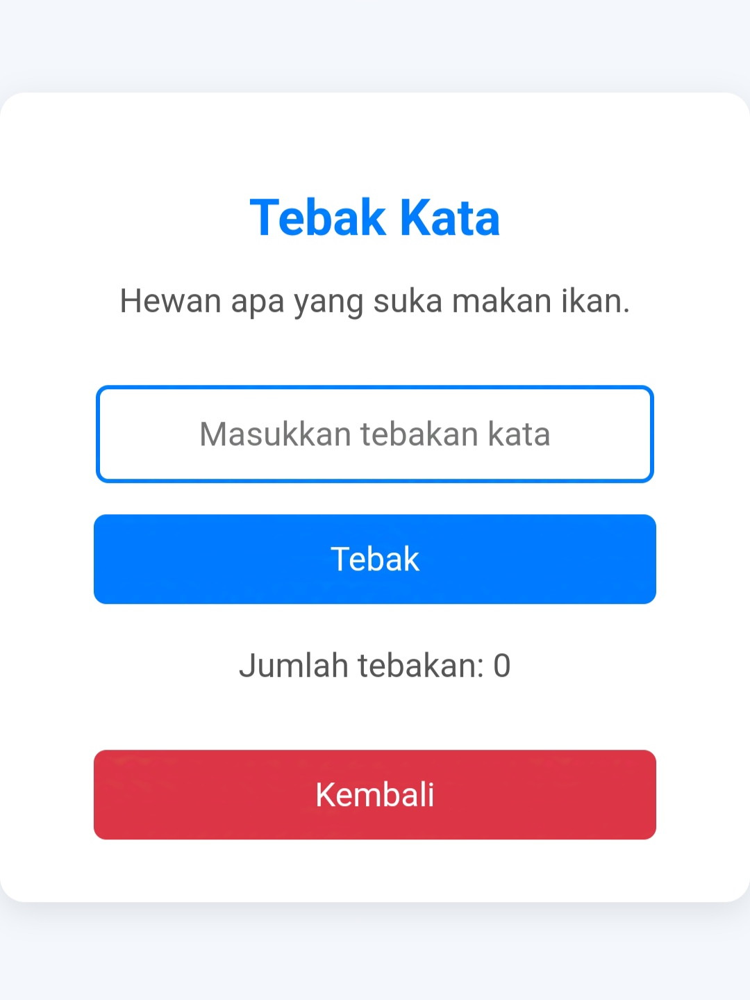

Ini dia, beberapa game buatan kami yang siap nemenin waktu kamu.
Klik gambar untuk main
Tebak Angka
Bergabunglah dalam permainan seru "Tebak Angka", di mana ketajaman logika dan insting Anda akan diuji! , Anda harus menebak angka yang tersembunyi berdasarkan petunjuk yang diberikan.

TEBAK KATA
Tebak Kata adalah permainan seru yang menguji kemampuan bahasa dan kecepatan berpikirmu. Dalam setiap level, kamu akan diberikan petunjuk singkat atau deskripsi, dan tugasmu adalah menebak kata yang tepat.